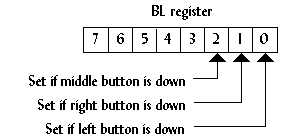
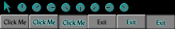
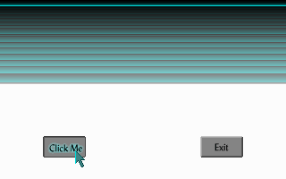

| Why a mouse? |
If a program that is meant to have an easy-to-use interface does not have mouse support, some would say it would not (and could not) be an easy-to-use interface. Programming the mouse is fairly simple on the low level, but there is a lot to deal with when considering buttons and animated mouse pointers, all of which will be covered in this section.
There are two ways to communicate with the mouse:
Reading the serial port can be cumbersome because the mouse must be detected, not to mention there are usually two or more serial ports on a computer, each of which could be connected to the mouse. Not to mention some mice use a PS/2 port or USB port.
The mouse driver, if installed on the user's machine, provides
an easy way to detect the mouse's existence and poll messages
like when a mouse button has been pressed and when the mouse has
moved. Using the mouse driver also ensures the code will work no
matter what type of mouse the user has. The driver also provides
mouse pointer support, but it is limited to two-color mouse
pointers. The program mouse.c at the end of this
section uses all of its own mouse pointers instead of the
driver's.
| Initializing the mouse |
Initializing the mouse is as easy as setting AX
to zero and calling interrupt 0x33. If the mouse is installed, AX
is set to FFFFh on return. The BX register returns
the number of mouse buttons.
union REGS regs; regs.x.ax = 0; int86(0x33, ®s, ®s); mouse_on = regs.x.ax; num_buttons = regs.x.bx;
This also sets the mouse driver's internal mouse position to the center of the screen. The center of the screen, according to the mouse driver, is not (160,100), it is (320,100). This is because the mouse driver maps the x position of the mouse from 0 to 639 and the y position from 0 to 199, no matter what video mode is currently active.
| Mouse status |
To get the mouse's current status, set AX to 3
and call interrupt 0x33. The x value is returned in CX
and the y value is returned in DX. BX
contains the status of the mouse buttons (Figure 17).
|  Figure 17. The status of the mouse buttons returned in BL after calling function 3. |
The following program segment is a basic mouse handler than uses a pixel as the mouse pointer. The program exits when a mouse button is pressed.
union REGS regs;
regs.x.ax = 0;
int86(0x33, ®s, ®s);
mouse_on = regs.x.ax;
if (!mouse_on)
{
printf("Mouse not found.\n");
exit(1);
}
buttons=0;
while (!buttons)
{
regs.x.ax=3;
int86(0x33, ®s, ®s);
cx = regs.x.cx;
dx = regs.x.dx;
offset = (cx>>1)+(dx<<8)+(dx<<6);
VGA[offset] = 15;
if (regs.x.bx) buttons=1;
}
| Mouse motion |
Using the mouse driver's mouse position is easy, but it is not
very portable to other video modes, like 320x240 or 640x480.
An alternate way to keep track of the mouse position is to let
the program do it, using function 0xB to get the motion that the
mouse has moved. This function returns the motion the mouse has
moved horizontally in CX, and the motion the mouse
has moved vertically in DX. The following program
segment uses function 0xB keep track of the mouse pointer. The
loop exits when the mouse is placed in the upper-left corner.
union REGS reg;
x=160;
y=100;
while (x>0 || y>0)
{
/*... display mouse here ...*/
reg.x.ax=0x0B;
int86(0x33,®s,®s);
x += (int)reg.x.cx;
y += (int)reg.x.dx;
if (x<0) x=0;
if (y<0) y=0;
if (x>319) x=319;
if (y>199) y=199;
}
| Mouse buttons |
Sometimes it does not matter if a mouse button is up or down,
only if it was just pressed. With functions 5 and 6,
instead of reading when a button is down, they read when a
button is first pressed and finally released. To do
this, set BX to the button (0=left, 1=right,
2=middle) and call interrupt 0x33. The function returns the
number of presses or releases that have occurred in BX.
The following code displays the status of the left button. The
loop exits when the right button is released.
printf("Press right button to quit\n");
do
{
regs.x.ax=5;
regs.x.bx=0;
int86(0x33,®s,®s);
if (regs.x.bx)
printf("Left button pressed.\n");
regs.x.ax=6;
regs.x.bx=0;
int86(0x33,®s,®s);
if (regs.x.bx)
printf("Left button released.\n");
regs.x.ax=6;
regs.x.bx=1;
int86(0x33,®s,®s);
} while (!regs.x.bx)
| Animation |
In a user-friendly interface, when the user selects a command
that takes a while to execute, the mouse pointer might become an
animated clock that lets the user know the computer is working.
This technique is demonstrated in mouse.c. The mouse
bitmap is stored in a structure that has a pointer to another
mouse pointer, which is the next bitmap in the animation.
The vertical retrace is monitored to eliminate flickering of the mouse pointer as well.
All the button bitmaps and mouse pointers are stored in a
single file, images.bmp (Figure 18). The BMP file is
read, then the separate icons are extracted from it.
|  Figure 18. images.bmp. |
| Program: mouse.c |
|
|
||||||||||||
| Having trouble compiling or running the program? See the Troubleshooting page. |
|  Figure 19. Output from mouse.exe. |
The previous program is the most substantial program in this manual. It covers everything from this section and the previous section, and actually demonstrates a solid user interface, although the program does not do anything useful. With the ideas from these past three programs, a pull-down menu system could be created.
However, the scheme used to reduce flickering in this program is not very accurate at times. To create flicker-free programs, one of two techniques should be used: double buffering or page flipping. Both of these techniques are discussed in the next section.
| Next: Double Buffering, Page Flipping, & Unchained Mode |